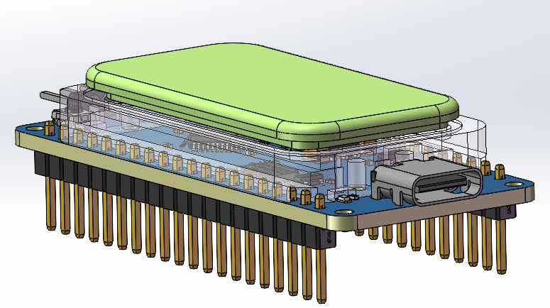

<!DOCTYPE lake>
<p data-lake-id="u5eeb59ae" id="u5eeb59ae" style="text-align: center"></p><p data-lake-id="u1195654a" id="u1195654a" style="text-align: left"><span data-lake-id="u2bd0775e" id="u2bd0775e">欢迎大家来学习我们最新开发板HC32F460. <br/><br/></span></p><p data-lake-id="u31f345d9" id="u31f345d9" style="text-align: left"><span data-lake-id="u2be90d2b" id="u2be90d2b">现在我们应该如何开始这块新板子的学习呢？正所谓工欲善其事必先利其器，万事开头难，只要肯放弃。</span></p><p data-lake-id="ue6e3720a" id="ue6e3720a" style="text-align: left"><span data-lake-id="ua6b983e7" id="ua6b983e7"><br/></span><span data-lake-id="ua27c1556" id="ua27c1556">我们只需要按照如下步骤来即可快速上手新的开发板：<br/></span><span data-lake-id="u6e4dd6be" id="u6e4dd6be">1. 复制例程</span></p><p data-lake-id="uda39fd6c" id="uda39fd6c" style="text-align: left"><span data-lake-id="u93efc696" id="u93efc696">2.编译例程</span></p><p data-lake-id="u10f44699" id="u10f44699" style="text-align: left"><span data-lake-id="u8967dc05" id="u8967dc05">3.烧录例程</span></p><p data-lake-id="ub5461f6b" id="ub5461f6b" style="text-align: left"><span data-lake-id="u01190dd1" id="u01190dd1">4.点个灯试试</span></p><p data-lake-id="ucf5d190c" id="ucf5d190c" style="text-align: left"><span data-lake-id="u50b5451a" id="u50b5451a">5.打印个helloicheima试试</span></p><p data-lake-id="u2d6f618b" id="u2d6f618b" style="text-align: left"><span data-lake-id="u36b789bd" id="u36b789bd">​</span><br/></p><p data-lake-id="u4f9440e4" id="u4f9440e4" style="text-align: center"><span data-lake-id="u753669ee" id="u753669ee" style="color: #DF2A3F">上面这些任务没有做完，别给我扯其它花里胡哨没有用的任务。</span></p><p data-lake-id="uea8400a1" id="uea8400a1" style="text-align: center"><span data-lake-id="uce2d1784" id="uce2d1784" style="color: #DF2A3F">上面这些任务没有做完，别给我扯其它花里胡哨没有用的任务。</span></p><p data-lake-id="ua6dcce10" id="ua6dcce10" style="text-align: center"><span data-lake-id="u314bf378" id="u314bf378" style="color: #DF2A3F">上面这些任务没有做完，别给我扯其它花里胡哨没有用的任务。</span></p><p data-lake-id="u3a9277a0" id="u3a9277a0" style="text-align: left"><span data-lake-id="u2014b24f" id="u2014b24f">​</span><br/></p><p data-lake-id="ue8f29f11" id="ue8f29f11" style="text-align: center"><span data-lake-id="u7fa662c8" id="u7fa662c8">再跟我说，可是，可是，可是我老板叫我先把ST7789屏幕点亮。<br/></span></p><p data-lake-id="u22d86fb3" id="u22d86fb3" style="text-align: left"><span data-lake-id="ue8bb1f33" id="ue8bb1f33">你想点亮屏幕，难道用嘴就能点亮吗？ 要学会拆解任务，请掏出你的笔记本，按照我说的这个步骤。<br/></span><span data-lake-id="u33689f0c" id="u33689f0c">第一步： 复制gpio例程学gpio口输出，把屏幕背光点亮。<br/></span><span data-lake-id="u4f7101b0" id="u4f7101b0">第二步：复制spi例程学spi如何发送数据。</span></p><p data-lake-id="u6588900a" id="u6588900a" style="text-align: left"><span data-lake-id="ue5d9dd1a" id="ue5d9dd1a">第三步：去淘宝，百度，github等搜索屏幕相关驱动代码。<br/></span><span data-lake-id="udbd51aa3" id="udbd51aa3">第四步： 把其中SPI通信的代码换成你自己的。</span></p><p data-lake-id="u9d1d1d58" id="u9d1d1d58" style="text-align: left"><span data-lake-id="u677acbb8" id="u677acbb8"><br/></span><span data-lake-id="u7a57846c" id="u7a57846c">屏幕驱动不就这样O而K之了吗？</span></p>